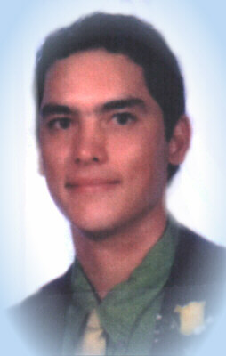
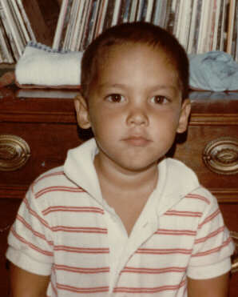

Welcome to my son's Memorial site. Ira Thomas Morihara was born Aug. 3, 1979, in Eutin, Germany. A few months after his birth, Ira's family moved to Maui.Ira was a brilliant student and athlete. He had a good head for math and was learning fractions in the 1st grade. He enjoyed bodyboarding, soccer, surfing, baseball and football more or less in that order.
Following his parents' divorce, Ira was raised with his older brother, Jackson, by my parents on Oahu since he was 9 years old. He excelled in sports and academics under the loving discipline of his grandmother.
 At the University of San Diego, Ira began grading papers for the math dept. as a freshman and also earned extra money tutoring. He was well-liked and enjoyed his life at school.
Ira passed away in his sophomore year, March 15, 1999. Although he never regained consciousness following his fatal skateboard accident on campus, I was able to be with him at his bedside during his last night on earth, as he lay in a coma.
Ira was in perfect physical health, despite the head trauma, so at the time of his passing we were able to contribute to an organ donor program to help others in need. The following letter is from the transplant coordinator we worked with at the Organ and Tissue Acquistion Center:
Dear Dennis,
I want to express my sincere condolences to you and your family for the sudden loss of your son. I realize that you had to make one of the most difficult decisions at a time of such deep sadness. It was remarkable that you were able to look past your own personal tragedy in an effort to help others. It is my hope that knowing the results of your generous gift will bring some sense of comfort to you and your family.
The liver recipient is from the San Diego area and is a retired real estate agent. He is doing well and is expected to return home to his family this week. He is grateful to you for this precious "gift of life."
The first kidney recipient is a 38-year-old single mother of a six-year-old who lives in Massachusetts. She lost the function of her kidneys from diabetes and has been on dialysis since 1995. The second kidney recipient is a 56-year-old mother of three children ages 17, 16 and 14, from the San Diego area. These kidneys started working immediately and both recipients have returned home to their families.
Ira's corneas were placed for transplant with the San Diego Eye Bank's "Gift of Sight" program. One of the corneas was transplanted into a 15-year-old boy that had damaged his eye in an accident. His sight and the sight of another individual have been restored. The donated tissues will also help heal the wounds of cancer, burn and traumatic injuries for more than thirty-five people.
On behalf of these recipients and their families, I would like to convey our deepest condolences and heart felt thanks. I know that words cannot alleviate the pain you and your family must feel, but I hope that in the months ahead, you will gain comfort in knowing you have given the "gift of life."
I am available should you have further questions or if I can assist your family in any way.
Warmest Regards,
Tamara Wright
I intend to use this site to commemorate my son through images, words & music and I hope his friends and family will be able to contribute. Ira touched many lives and I have several letters and words of kindness written by those who knew him. I would like to share these notes and letters with visitors. Thank you for this opportunity. Ira's father, Dennis
|
 He always looked out for others before himself. He was quick to offer help when it was needed and never failed to cheer me up when I was down. He brought smiles to thousands of faces over the years, and he will continue to do so through memory. I can't thank Ira enough for the friendship he showed me, and I know he is in a better place right now, walking hand in hand with the Lord. Ira, I will never forget you. Rest in Peace my Brother. Love, S.
He always looked out for others before himself. He was quick to offer help when it was needed and never failed to cheer me up when I was down. He brought smiles to thousands of faces over the years, and he will continue to do so through memory. I can't thank Ira enough for the friendship he showed me, and I know he is in a better place right now, walking hand in hand with the Lord. Ira, I will never forget you. Rest in Peace my Brother. Love, S.
Ira with his older brother, Jackson and his younger brother, Nathanial and sister, Heather
The following is the text of Ira's last Father's Day Card to me, 1998:Dear Dad,
Thank you for everything and for having a Mom as caring as Grandma. Even though things didn't turn out the way we would have liked them to, I still feel that you have succeeded as a parent and always as a father.
Everyday I try and do things the way I think you would. I hope to be just like you with all the wisdom you possess. As I am learning more and more, I am beginning to understand the logic in the way you see things and even in the belief of a religion. I have not yet quite discovered the religious part of my life but I totally agree that we should count our blessings and be grateful for the life given to us. All we can do is try our best to live the best life that we have.
I don't think I ever told you that I loved you since you would tuck me into bed when I was a little kid. You rubbing my head and back as I fell asleep is probably my fondest childhood memories. Just because it's hard for me to say these things, don't feel that I don't think them.
I hope everything is going well in New York for you and our family. I love you and I hope you had a Happy Fathers Day. I am thinking about going to visit during next year's spring break. Love, Ira
More notes from a sympathy card: | |
|
|